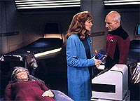
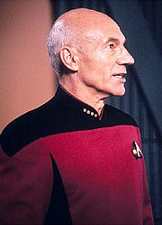
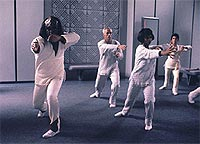
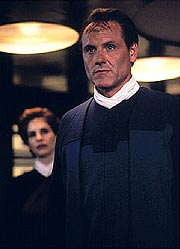

|
MANCHETE
DO EPISDIO
Mais uma tentativa de usar Deanna
Troi resulta em episdio previsvel
Episdio
anterior | Prximo
episdio
Sinopse:
Data Estelar: 46071.6.
A Enterprise enviada para assistir uma nave da Federao sob
ataque enquanto transportava o embaixador Lumeriano para mediar uma
disputa no sistema Rekag-Seronia. Picard concorda em transportar o
embaixador, Ves Alkar, a bordo de sua nave para garantir sua segurana.
Alkar vem nave com sua velha me, Sev Maylor, que reage
negativamente a Troi assim que chega a bordo. Aps Alkar pedir a
Troi que use seus poderes empticos para ajud-lo nas negociaes
entre os Seronianos e os Rekags, Maylos ofende Troi, dizendo que ela
est atrada pelo filho dela. Irritada, Troi partilha as sensaes
negativas que sentiu na velha mulher com Riker. Os dois ficam
surpresos poucos minutos depois, quando so convocados aos
aposentos de Alkar e descobrem que ela est morta.
 Como ela uma
empata, Alkar pede a ela que realize com ele um tradicional rito de
meditao funerria, um processo que a deixa se sentindo um pouco
estranha. Enquanto isso, a Enterprise d s boas-vindas aos dois
assistentes de Alkar, Jarthe Liva, que esto perturbados pela piora
das brigas entre as faces em guerra. Alkar, entretanto,
permanece calmo e at insiste em ir ao local das negociaes sem
a proteo de um grupo avanado. Mais tarde Troi se une ao grupo
no bar panormico, mas choca Data e Riker com sua aparncia e
comportamento. Ela parece estar envelhecendo rapidamente e est se
vestindo de forma mais provocante. Alm disso, ela ataca
vigorosamente Jarth e Liva, fazendo com que Riker a leve a seus
aposentos. Uma vez l, ele fica mais chocado ainda quando Troi o
ataca.
No dia seguinte, Alkar chega aos aposentos de Troi e a irrita ao
revelar que estar descendo ao local das negociaes sem ela.
Elas o segue at a plataforma de transporte, implorando para que
ele a levasse. Picard fica chocado por sua mudana de aparncia
--ela agora uma velha enrugada e grisalha. No querendo deixar
que Alkar parta, ele corre em sua direo com uma faca, acertando
Picard no ombro quando ele tenta impedi-la.
Um grupo de segurana chega rapidamente e leva os dois, Picard e
Troi, para a enfermaria. L a enfermeira Ogawa nota uma correlao
entre a condio de Troi e aquela em que Maylor estava pouco antes
de morrer. Incapaz de contatar Alkar, Picard autoriza Beverly a
fazer uma autpsia na mulher morta, mesmo sem a aprovao do
filho. Beverly logo descobre que Maylor no era realmente me de
Alkar, mas uma mulher de 30 anos artificialmente envelhecida.
Alarmado, Picard vai ao local das negociaes e confronta Alkar,
que revela ter sido a causa dos envelhecimentos de Maylor e Troi.
Ele usava essas mulheres, canalizando seus pensamentos negros nelas
para manter sua prpria mente livre de emoes indesejadas e
permanecer sendo um negociador perfeito. Picard insiste que Alkar
liberte Troi, mas ele se recusa e retorna mesa de negociaes.
 Para
salvar Troi e enganar Alkar, Beverly e Picard induzem Troi a um
estado similar morte, para cortar o elo com Alkar e for-lo a
procurar outra pessoa. Alkar imediatamente se transporta para a
Enterprise com Liva. Aps ver o corpo "morto" de Troi,
ele se prepara paar realizar o ritual funerrio com Liva, esperando
transform-la em um novo receptculo. Mas no minuto em que o elo
est para ser estabelecido, Picard transporta Liva, deixando Alkar
sozinho com seus terrveis pensamentos. O peso psquico o mata ao
mesmo tempo em que Beverly ressuscita Troi, ainda abalada pela
experincia.
Comentrios:
"Man of
the People" padece do mesmo mal que todo episdio
produzido at este momento da srie com o objetivo de explorar
Deanna Troi: ele aborda a personagem de forma extremamente
superficial, como se ela no fosse mais que "a personagem
empata da nave".
Alm desse problema crnico (que tem muito mais a ver com a viso
mope dos produtores e roteiristas para com a conselheira do que
com um defeito exclusivo do episdio), temos uma histria que
torna-se extremamente previsvel desde o momento em que Troi repara
em suas primeiras olheiras em frente ao espelho.
At esse ponto, o episdio conseguia se manter sob uma certa aura
de suspense, mas dali em diante s uma questo de observarmos
quanto tempo vai levar para Picard e cia. descobrirem o que sabemos
desde o incio. O que, em certas circunstncias, poderia at
funcionar, mas aqui fracassa terrivelmente.
Com um episdio previsvel e sem reviravoltas, resta procurar as
qualidades. Elas certamente no so encontradas no embaixador
Alkar, interpretado por Chip Lucia. O ator tem aqui a expressividade
de uma porta.
 Por outro lado, o
segmento consegue explorar de forma interessante a rotina de Deanna
Troi como conselheira da nave. Pela primeira vez, temos a noo de
que ela est l para mais coisas do que simplesmente sentar na
ponte e dizer ao capito quando o aliengena da semana tenta
esconder algo. Ela tem um trabalho bastante importante fora da
ponte, ajudando a administrar os problemas interpessoais da nave e
avaliando o pessoal em servio. Se os produtores nunca conseguiram
encontrar uma boa funo para Troi na srie, pelo menos na nave
ela mostrou ter um papel importante.
Outro ponto bem desenvolvido foi a relao de ternura e afeio
de Deanna e Will Riker. Sabemos desde o primeiro episdio da srie
que os dois estavam afetivamente ligados e tinham um passado juntos,
mas so raras as vezes em que tivemos a chance de ver o
amadurecimento da relao dos dois, transcendendo a situao de
"ex-namorados" para se tornarem realmente confidentes um
do outro. Um bonito relacionamento, que retratado de forma
bastante real aqui.
Quem tambm sai ganhando Beverly Crusher. Apesar de a mdica
geralmente ter pouca participao na srie (provavelmente o mais
esquecido de todos os personagens regulares), no d para se
cansar de ver a determinao da doutora em solucionar os problemas
mdicos. Mesmo antes de Deanna manifestar qualquer sintoma, ela j
estava com a pulga atrs da orelha pela morte da suposta me de
Alkar. E no desistiu da investigao nem quando Picard ordenou
que ela no fizesse a autpsia, procurando pistas nos registros do
transporte. Certamente Beverly uma fonte de inspirao para
todos aqueles que sabem o quanto a obstinao faz parte da prtica
mdica.
No sentido de criar contextos a bordo da Enterprise, a aula de artes
marciais Klingons dada pelo tenente Worf tambm interessante.
meio ridculo que Alkar esteja nela, mas, mesmo assim, foi uma
forma melhor de permitir mais contato entre Deanna e Alkar do que
simplesmente inserindo mais uma "cena de corredor". E a
oportunidade tambm consegue mostras o que faz o tenente Worf
quando no est na ponte sugerindo disparos de torpedos fotnicos.
Algumas cenas do episdio so divertidas, embora em geral sejam de
comdia involuntria. Quando Troi, alterada por Alkar, d uma
bela entortada na pobre alferes Janeway (eita nominho escolhido a
dedo, hein?), impossvel no rir da cara desconcertada da
oficial frustrada. E quando Deanna quase arranca o couro de Riker
tambm impossvel deixar de rir, embora o tom da cena seja
intencionalmente dramtico. Embora tecnicamente sejam "bolas
fora" do roteiro, acabam acrescentando algo de bom experincia
televisiva.
 Por fim,
engraado notar o tom extremamente moralista que Jornada nas
Estrelas, e em especial A Nova Gerao, tem. Entre os
sentimentos "ruins" manifestados pela conselheira depois
de receber as influncias negativas de Alkar esto coisas
sabidamente terrveis, como agressividade, inveja e cimes. Mas o
que mais salta aos olhos a lascvia da conselheira --algo que s
considerado ruim dentro do escopo bastante limitado da poca em
que foi produzido o episdio. Provavelmente, com o passar das dcadas,
esse ser um daqueles momentos que precisar ser observado com os
olhos de um historiador, como acontece hoje em dia com um
telespectador que tenta entender o machismo claro e imponente com o
qual est impregnada a Srie Clssica.
De fato, "Man of the People" uma histria bem
pouco criativa e seu objetivo, desenvolver Deanna Troi, acaba sendo
frustrado, e no resto no h qualquer pretenso filosfica (uma
vez que as motivaes de Alkar claramente no justificam seus
atos, por qualquer moralidade que se possa imaginar). E apesar de
tudo que aprendemos do cotidiano da conselheira, sua psique
permanece mais unidimensional do que nunca. o preo que se paga
por ser empata em uma produo em que todos os roteiristas no o
so...
Citaes:
Picard - "He has
no intention to stop. He feels perfectly justified using her until
she dies."
("Ele no tem inteno de parar. Ele se sente perfeitamente
justificado em us-la at que ela morra.")
Beverly - "Then Deanna must die."
("Ento Deanna deve morrer.")
Trivia:
 A voz original do capito Talmadge foi feita por Terrence Beasor,
que fez tambm a voz de aliengenas em "Skin of Evil",
"The Ensigns of Command" e "Devil's
Due".
A voz original do capito Talmadge foi feita por Terrence Beasor,
que fez tambm a voz de aliengenas em "Skin of Evil",
"The Ensigns of Command" e "Devil's
Due".
Ao
invs desse roteiro, o episdio 129 da Nova Gerao
poderia ter sido uma histria com Q, que reapareceria para criar
irmos gmeos da tripulao, no estilo do episdio "The
Enemy Within", da Srie Clssica. A idia de
Rene Echevarria foi abandonada e Frank Abatemarco foi contratado
para escrever um histria sobre Deanna Troi.
Neste episdio ficamos sabendo que o quarto da conselheira Troi
ficam no deck 9 da Enterprise.
"Man
of the People" deveria ter sido filmado aps "Relics",
mas por problemas com a agenda de James Doohan, o Scotty, a ordem
foi invertida.
Ficha
tcnica:
Escrito por Frank Abatemarco
Direo de Winrich Kolbe
Exibido em 05/10/1992
Produo: 129
Elenco:
Patrick Stewart como
Jean-Luc Picard
Jonathan Frakes como William Thomas Riker
Brent Spiner como Data
LeVar Burton como Geordi La Forge
Michael Dorn como Worf
Gates McFadden como Beverly Crusher
Marina Sirtis como Deanna Troi
Elenco convidado:
Chip Lucia
como embaixador Ves Alkar
George D. Wallace como almirante Simons
Lucy Boryer como alferes Janeway
Susan French como Sev Maylor
Rick Scarry como Jarth
Stephanie Erb como Liva
J.P. Hubbell como um alferes
Patti Yasutake como enfermeira Alyssa Ogawa
Majel Barrett-Roddenberry como a voz do computador
Episdio
anterior | Prximo
episdio
|